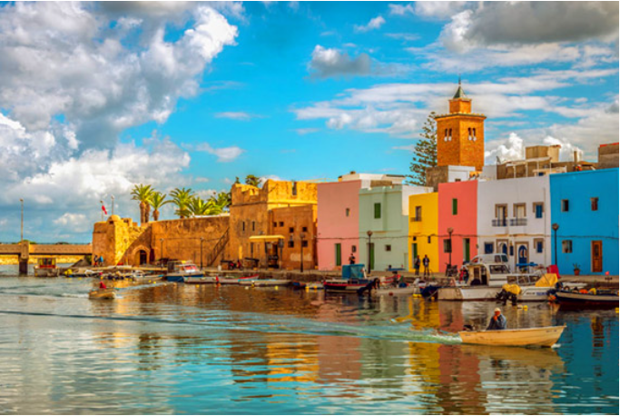
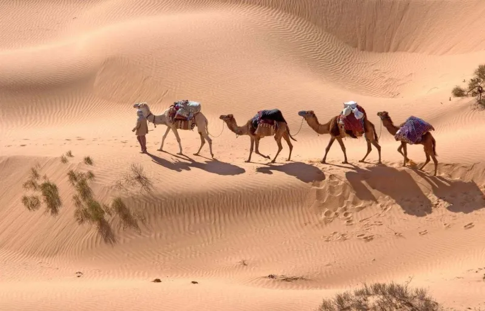
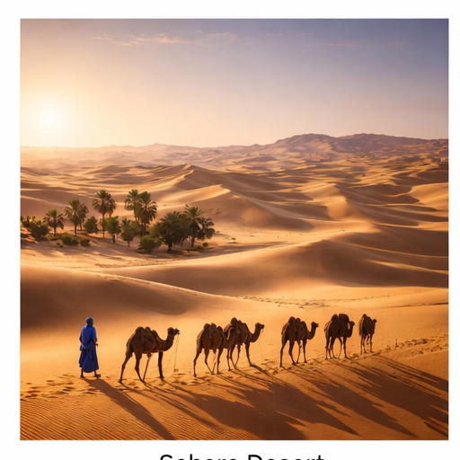
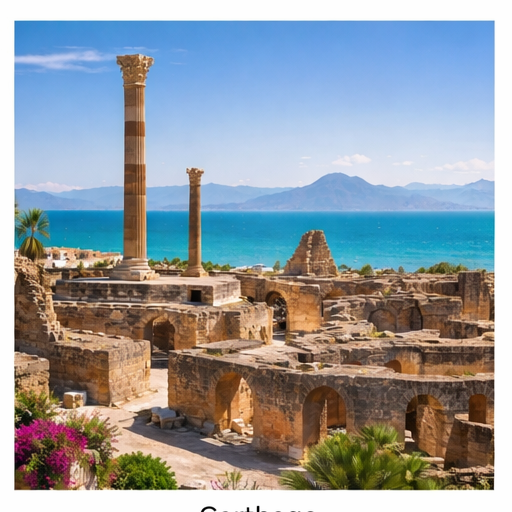
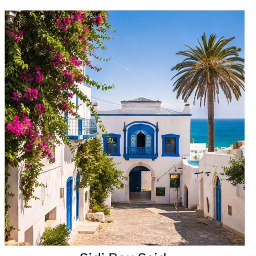
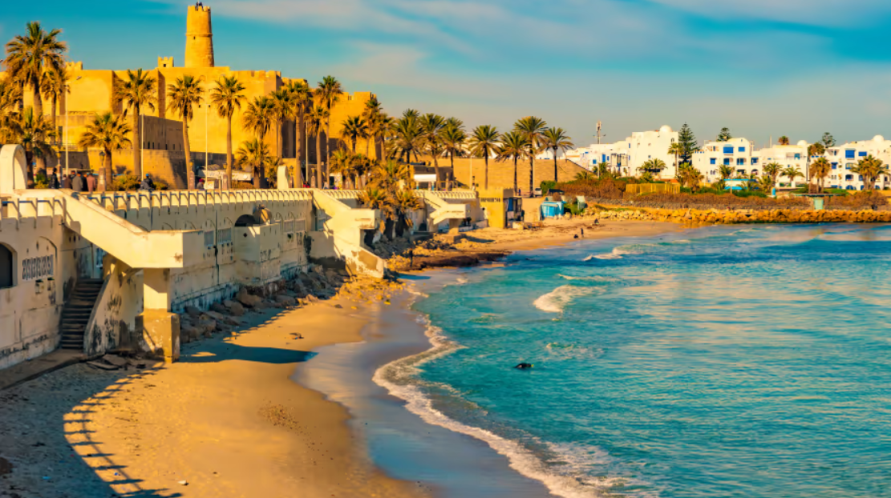
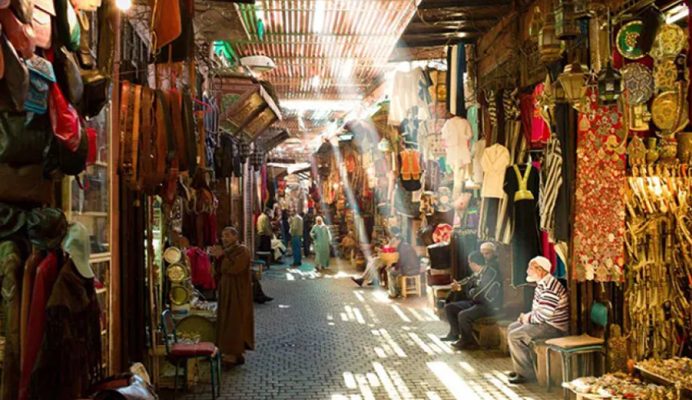
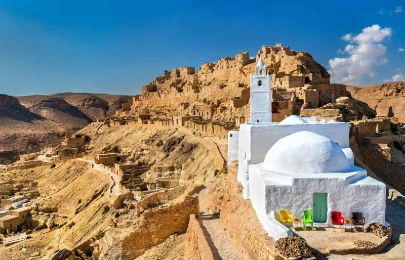

Destinations en Tunisie
Cliquez sur chaque destination pour découvrir son histoire et ses attractions.

Bizerte – Ville côtière avec son port historique et ses plages.
 Désert du Sahara – Expérience des dunes et balades à dos de chameau.
Désert du Sahara – Expérience des dunes et balades à dos de chameau.

Activités dans le désert – Excursions en quad et bivouac.

Sidi Bou Said – Village pittoresque bleu et blanc surplombant la mer.

Monastir – Ribat historique et plages méditerranéennes.

Douz – Porte du désert et oasis typiques.

Monastir – Mausolée de Bourguiba et architecture moderne.

El Jem – Amphithéâtre romain impressionnant.
 Sfax – Médina traditionnelle et souks animés.
Sfax – Médina traditionnelle et souks animés.

Chenini – Village berbère sur la montagne et mosquée historique.
 Sousse – Ribat historique et médina animée.
Sousse – Ribat historique et médina animée.